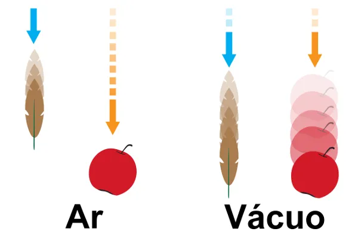

Queda Livre:
Conceito
A queda livre acontece quando um objeto cai apenas por causa da força da gravidade, sem a interferência do ar ou de qualquer outra força. Isso significa que, ao soltar um objeto, ele vai começar a cair para o chão e sua velocidade vai aumentar a cada segundo que passa, porque a gravidade o acelera. Todos os objetos caem da mesma forma, independente do tamanho ou peso, desde que não haja resistência do ar. Isso é o que acontece, por exemplo, quando você deixa cair uma bola ou uma pena, mas sem o vento ou outras condições que possam interferir.
